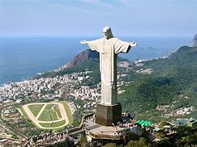
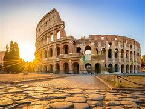
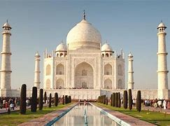

Great Wall of China (China)

A massive fortification built over centuries to protect against invasions. It stretches over 13,000 miles and is one of the most impressive engineering feats in history. The wall consists of watchtowers, barracks, and signal stations, showcasing the strategic military planning of ancient China.
Petra (Jordan)

An ancient city carved into red sandstone cliffs, showcasing unique rock-cut architecture. It served as the capital of the Nabataean Kingdom and remains an important archaeological site. The Treasury and Monastery are among its most famous structures, revealing the artistic mastery of the Nabataeans.
Christ the Redeemer (Brazil)
A 98-foot-tall statue of Jesus Christ, symbolizing peace and unity. Located in Rio de Janeiro, it is one of the most iconic landmarks in South America. The statue, made of reinforced concrete and soapstone, overlooks the city from the Corcovado Mountain.
Machu Picchu (Peru)

An Incan citadel located in the Andes Mountains, known for its breathtaking views and historical significance. Built in the 15th century, it was rediscovered in 1911 and remains a major tourist attraction. Its well-preserved terraces, temples, and water channels reflect the advanced engineering skills of the Incas.
Chichen Itza (Mexico)

A major Mayan city featuring the El Castillo pyramid, used for astronomical observations. It was a significant religious and cultural center for the Mayan civilization. The pyramid aligns with the sun during the equinox, displaying the Mayans' deep understanding of astronomy.
Roman Colosseum (Italy)
An ancient amphitheater where gladiators once fought for entertainment. Built in 80 AD, it is the largest amphitheater ever constructed and remains a symbol of Rome's grandeur. The Colosseum could hold up to 50,000 spectators and featured an intricate underground network for staging battles and performances.
Taj Mahal (India)
A stunning white marble mausoleum built by Mughal Emperor Shah Jahan in memory of his wife. It is an exquisite example of Mughal architecture and a UNESCO World Heritage Site. The intricate carvings, inlaid gemstones, and symmetrical gardens highlight the artistic and architectural brilliance of the Mughal era.